전자계산기조직응용기사 (2007-08-05 기출문제)
1과목: 전자계산기 프로그래밍
1. C 언어의 기억 클래스 종류에 해당하지 않는 것은?
- automatic variable
- register variable
- internal variable
- static variable
(정답률: 74%)

2. 서브루틴으로 작성되는 프로시저는 주프로시저에서 호출되어 실행하고, 실행이 끝나면 자신을 호출한 CALL의 다음 명령으로 복귀시켜야 한다. 서브루틴에서 자신을 호출한 곳으로 복귀시키는 어셈블리 명령은?
- END
- SAR
- CMP
- RET
(정답률: 86%)
3. 어셈블러(Assembler)를 가장 바르게 설명한 것은?
- 고급언어로 작성된 원시 프로그램을 컴퓨터가 이해할 수 있는 기계어 명령으로 번역하여 목적 프로그램을 생성시키는 프로그램
- 저급언어로 작성된 원시 프로그램을 컴퓨터가 이해할 수 있는 기계어 명령으로 번역하여 목적 프로그램을 생성시키는 프로그램
- 컴퓨터가 직접 실행할 수 있는 제어 신호를 2진수 형태로 표기해 놓은 언어
- 기계어 명령들로 표현된 프로그램
(정답률: 79%)
4. 정적 바인딩에 해당하지 않는 것은?
- 언어정의 시간
- 실행시간
- 번역시간
- 언어구현 시간
(정답률: 52%)
5. 객체지향 프로그래밍 언어가 소프트웨어 설계상 가장 크게 공헌한 점은?
- 코드의 재사용
- 코드의 종속성
- 코드의 자동성
- 코드의 정확성
(정답률: 82%)
6. C 언어에서 이스케이프 시퀀스의 설명이 옳지 않은 것은?
- \f : form feed
- \r : carriage return
- \b : back slash
- \t : tab
(정답률: 89%)
7. 객체 지향에 관한 설명으로 옳지 않은 것은?
- 객체 지향의 특징은 추상화, 정보 은닉, 모듈화 등이 있다.
- 객체의 동작 지시는 메시지에 의해 수행된다.
- 객체 중심은 구조적 코딩 기능을 극대화 할 수 있다.
- 객체 중심에서는 재사용의 기능을 이용할 수 있다.
(정답률: 73%)
8. PLC에 관한 설명으로 옳지 않은 것은?
- Programmable Logic Controller의 약자이다.
- 일반적으로 시퀀스(Sequence)라고도 불리운다.
- 마이크로 컴퓨터 및 메모리를 중심으로 하는 전자회로로 구성되어 있다.
- PLC는 가정용 컨트롤러로 주로 이용된다.
(정답률: 78%)
9. C 언어에서 사용하는 데이터형이 아닌 것은?
- character
- int
- float
- short
(정답률: 78%)
10. 어셈블리어에서 라이브러리에 기억된 내용을 프로시저로 정의하여 서브루틴으로 사용하는 것과 같이 사용할 수 있도록 그 내용을 현재의 프로그램 내에 포함시켜 주는 명령은?
- SEGMENT
- ORG
- INCLUDE
- EXTRN
(정답률: 89%)
11. 좋은 프로그램 언어의 조건에 대한 설명으로 거리가 먼 것은?
- 개념이 단순하고 명료해야 한다.
- 프로그램 언어의 이식성은 문제가 안된다.
- 언어의 확장이 용이해야 한다.
- 프로그램의 효율성이 좋아야 한다.
(정답률: 89%)
12. C 언어의 명령문 중 “do ~ while" 문에 대한 설명으로 옳지 않은 것은?
- 명령의 조건이 거짓일 때 loop를 반복 처리한다.
- 명령의 조건이 거짓일 때도 최소한 한번은 처리한다.
- 무조건 한번은 실행하고 경우에 따라서는 여러 번 실행하는 처리에 사용하면 유용하다.
- 제일 마지막 문장에 “;” 기호가 필요하다.
(정답률: 69%)
13. 객체지향 언어의 개념에서 하나 이상의 유사한 객체들을 묶어서 하나의 공통된 속성을 표현한 것은?
- 메시지
- 메소드
- 클래스
- 인스턴스
(정답률: 89%)
14. 주어진 BNF를 이용하여 그 대상을 근으로 하고 터미널 노드들이 검증하고자 하는 표현식과 같이 되는 트리를 무엇이라 하는가?
- sweked tree
- binary tree
- parse tree
- circle tree
(정답률: 91%)
15. C 언어에서 프로그램의 변수 선언을 “int c;"로 했을 경우 ”&c"는 어떤 의미인가?
- c의 절대값
- c에 저장된 값
- c의 기억장소 주소
- c의 범위
(정답률: 71%)
16. 변수의 값이 저장된 기억 장소?위치를 확인할 수 있는 것은 변수의 어떤 구성 요소에 의해서 가능한가?
- 이름
- 값
- 참조기능
- 대입기능
(정답률: 86%)
17. C 언어에서 지정된 파일로부터 한 문자씩 읽어들이는 파일처리 함수는?
- fopen()
- fscanf()
- fgetc()
- fgets()
(정답률: 85%)
18. 어셈블리에서 인덱스 번지 지정방식의 명령은?
- MOV AX, 12
- MOV BL, CX
- MOV AH, [Dl]
- MOV AL, [1000h]
(정답률: 63%)
19. 프로그램 제어방법 중 반복문과 거리가 먼 것은?
- While 문
- Switch Case 문
- Do While 문
- For 문
(정답률: 81%)
20. 원시프로그램을 번역할 때 어셈블러에게 요구되는 동작을 지시하는 명령으로서 기계어로 번역되지 않는 명령어를 무엇이라 하는가?
- 매크로 명령(macro instruction)
- 기계어 명령(machine instruction)
- 의사 명령(pseudo instruction)
- 오퍼랜드 명령(operand instruction)
(정답률: 91%)
2과목: 자료구조 및 데이터통신
21. 프로토콜의 기본적인 요소가 아닌 것은?
- 구문(syntax)
- 타이밍(timing)
- 제어(control)
- 의미(semantic)
(정답률: 67%)
22. TCP/IP 모델에서 응용 계층 프로토콜이 아닌 것은?
- TELNET
- SMTP
- ROS
- FTP
(정답률: 74%)
23. 사용 가능한 주파수 대역을 나누어서 통화로를 할당하는 방식은?
- 주파수 분할 다중화
- 시분할 다중화
- 진폭 분할 다중화
- 통계적 다중화
(정답률: 85%)
24. 에러 제어에 사용되는 자동반복 요청(ARQ) 기법이 아닌 것은?
- stop-and-wait ARQ
- go-back-N ARQ
- auto-repeat ARQ
- selective-repeat ARQ
(정답률: 57%)
25. LAN의 물리적 구조에 의한 분류 방법이 아닌 것은?
- 성형
- CSMA/CD
- 버스형
- 링형
(정답률: 81%)
26. 다음 중 데이터링크 계층의 프로토콜이 아닌 것은?
- BSC
- SDLC
- HDLC
- SMTP
(정답률: 71%)
27. OSI(Open System Interconnection) 7 계층에서 다음 설명에 해당하는 계층은?
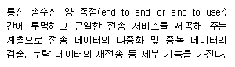
- 응용 계층
- 네트워크 계층
- 전송 계층
- 표현 계층
(정답률: 88%)
28. 데이터 통신용 터미널의 구성 부분이 아닌 것은?
- 회선 접속부
- 입력장치부
- 회선 제어부
- 변?복조부
(정답률: 39%)
29. 다음 중 홀수 패리티 비트를 사용하여 문자를 전송할 경우 에러가 일어난 경우는?
- 11100011
- 11101111
- 10101011
- 11100111
(정답률: 65%)
30. 다음 중 PCM의 단계를 올바르게 나타낸 것은?
- 표본화 → 양자화 → 부호화
- 표본화 → 부호화 → 양자화
- 양자화 → 부호화 → 표본화
- 양자화 → 표본화 → 부호화
(정답률: 80%)
31. 다음 자료에 대하여 버블 정렬(bubble sort)을 이용하여 오름차순으로 정렬할 경우 “pass 1”의 실행 결과는?
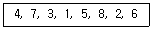
- 3, 1, 4, 5, 2, 6, 7, 8
- 1, 3, 4, 2, 5, 6, 7, 8
- 4, 3, 1, 5, 7, 2, 6, 8
- 1, 3, 2, 4, 5, 6, 7, 8
(정답률: 80%)
32. 8bit 컴퓨터에서 2의 보수법에 의한 수치표현이 다음과 같을 때 10진수의 값은 얼마인가?
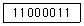
- 61
- -61
- 63
- -63
(정답률: 64%)
33. 다음 트리를 후위 순회(post-order traversal)한 결과는?
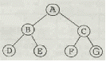
- A B C D E F G
- B D E A C F G
- D E B A F G C
- D E B F G C A
(정답률: 83%)
34. 데이터베이스 관리시스템이 갖는 장점으로 거리가 먼 것은?
- 데이터 중복을 최소화 한다.
- 여러 사용자에 의해 데이터를 공유한다.
- 데이터 간의 종속성을 유지한다.
- 데이터의 일관성을 유지한다.
(정답률: 71%)
35. 데이터베이스 관리 시스템의 필수 기능에 해당하지 않는 것은?
- 정의기능(definition facility)
- 조작기능(manipulation facility)
- 예비기능(backup facility)
- 제어기능(control facility)
(정답률: 84%)
36. 데이터베이스의 3층 스키마에 해당하지 않는 것은?
- 관계 스키마
- 내부 스키마
- 외부 스키마
- 개념 스키마
(정답률: 82%)
37. 다음과 관계되는 트랜잭션의 특성은?
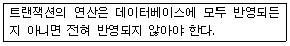
- Isolation
- Consistency
- Atomicity
- Durability
(정답률: 78%)
38. 색인 순차 파일(Indexed Sequential File)에서 색인영역(Index Area)의 구성이 아닌 것은?
- 트랙 색인(track index) 영역
- 실린더 색인(cylinder index) 영역
- 마스터 색인(master index) 영역
- 오버플로우 색인(overflow index) 영역
(정답률: 78%)
39. 스택의 응용 분야가 아닌 것은?
- 부프로그램 호출시 복귀주소 저장
- 운영체제의 작업 스케줄링
- 인터럽트가 발생하여 복귀주소 저장
- 후위표기법으로 표현된 산술식 연산
(정답률: 77%)
40. 데이터베이스의 설계 순서로 옳은 것은?
- 논리적 설계 → 개념적 설계 → 물리적 설계
- 개념적 설계 → 물리적 설계 → 논리적 설계
- 개념적 설계 → 논리적 설계 → 물리적 설계
- 논리적 설계 → 물리적 설계 → 개념적 설계
(정답률: 82%)
3과목: 전자계산기구조
41. 어느 컴퓨터의 기억 용량이 1M byte이다. 이 때 필요한 주소선의 수는?
- 8개
- 16개
- 20개
- 24개
(정답률: 63%)
42. Paging 기법과 가장 관계가 적은 것은?
- CAM(Content Addressable Memory)
- Cache Memory
- Virtual Memory
- Associative Memory
(정답률: 32%)
43. fetch cycle에서 일어나는 micro instruction 이다. 시행 순서가 옳은 것은? (단, MAR : Memory Address Register, MBR : Memory Buffer Register, PC : Program Counter, OPR : Operation Code Register)
- ②→①→③→④
- ①→②→③→④
- ②→④→①→③
- ③→①→②→④
(정답률: 30%)
44. 동시에 여러 개의 인터럽트 요청이 발생하게 되면, 중앙 처리장치에 가까운 장치가 높은 우선순위를 갖고 먼저 처리되는 하드웨어에 의한 방식은?
- DMA
- polling
- daisy chain
- interrupt chain
(정답률: 73%)
45. 다음 불 함수를 간소화한 것은?
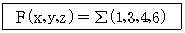
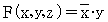
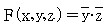
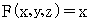
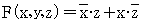
(정답률: 63%)
46. 명령어 ADD(200)가 수행되면 다음 중 어느 것이 연산 장치로 보내지는가? (단, ( )는 INDIRECT ADDRESSING을 뜻하고 기억 장소 200번지에는 4000이 저장되어 있다.)
- 200
- 200번지의 내용
- 4000
- 4000번지의 내용
(정답률: 50%)
47. 프로그램 상태 워드(program status word)에 대한 설명으로 옳은 것은?
- 시스템의 동작은 CPU안에 있는 program counter에 의해 제어된다.
- interrupt 레지스터는 PSW의 일종이다.
- CPU의 상태를 나타내는 정보를 가지고, 독립된 레지스터로 구성된다.
- PSW는 8bit의 크기이다.
(정답률: 50%)
48. 하드웨어 신호에 의하여 특정 번지의 서브루틴을 수행하는 것은?
- handshaking mode
- vectored interrupt
- DMA
- subroutine call
(정답률: 65%)
49. 명령어의 연산자 코드가 8비트, 오퍼랜드(operand)가 10비트일 때, 이 명령어로 최대 몇 가지 연산을 수행할 수 있는가?
- 8
- 18
- 256
- 1024
(정답률: 64%)
50. 인터럽트 체제의 기본 요소가 아닌 것은?
- 인터럽트 오류 신호
- 인터럽트 요청 신호
- 인터럽트 처리 루틴
- 인터럽트 취급 루틴
(정답률: 48%)
51. DMA(Direct Memory Access)에 대한 설명으로 옳은 것은?
- CPU와 레지스터를 직접 이용하여 자료를 전송한다.
- 일반적으로 속도가 느린 입?출력 장치에 사용한다.
- 입?출력에 사용할 CPU 레지스터 정보를 DMA 제어기에 보낸다.
- CPU와 무관하게 주변장치는 기억장치를 access 하여 데이터를 전송한다.
(정답률: 77%)
52. 컴퓨터에서 사용하는 명령어를 기능별로 분류할 때 동일한 분류에 포함되지 않는 것은?
- JMP(Jump 명령)
- ADD(Addition 명령)
- ROL(Rotate Left 명령)
- CLC(Clear Carry 명령)
(정답률: 48%)
53. 다음 인터럽트 중에서 우선 순위가 가장 높은 것은?
- 외부 신호
- 프로그램
- 기계 이상
- 전원 이상
(정답률: 78%)
54. 인스트럭션 세트의 효율성을 높이기 위하여 고려할 사항이 아닌 것은?
- 기억공간
- 레지스터의 종류
- 사용빈도
- 주기억 장치의 밴드폭 이용
(정답률: 67%)
55. 다음 중 데이터를 디스크에 분산 저장하는 기술은?
- 디스크 인터리빙
- 블록킹
- 페이징
- 세그먼트
(정답률: 65%)
56. 비수치 데이터에서 마스크를 이용하여 불필요한 부분을 제거하기 위한 연산은?
- OR
- XOR
- AND
- NOT
(정답률: 47%)
57. 다음 중 동시에 양방향으로 전송이 가능한 방식은?
- full duplex
- half duplex
- simplex
- PTV
(정답률: 83%)
58. 다음과 같은 마이크로 동작은 어떤 명령의 수행과정을 나타내는 것인가?
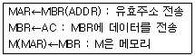
- Load to AC
- AND to AC
- Branch Unconditionally
- Store AC
(정답률: 50%)
59. 중앙처리장치와 주변장치를 연결시켜 주는 것으로 장치간의 회선 연결 방식, 회선 제어 방식, 데이터 송?수신 절차 및 전송방식, 전기 신호 규격 등의 일치가 요구되는 것은?
- 모듈(module)
- 인터페이스(interface)
- 캐시(cache0)
- 인스트럭션(instruction)
(정답률: 80%)
60. 다음 중에서 모든 버스 마스터들이 균등하게 버스를 사용할 수 있게 해 주는 버스 중재 방식은?
- 하드웨어 폴링 방식
- 분산식 직렬 중재 방식
- 고정 우선순위 방식
- 회전 우선순위 방식
(정답률: 58%)
4과목: 운영체제
61. 다중 프로그래밍 시스템에서 운영체제에 의하여 CPU가 할당되는 프로세스를 변경하기 위하여 현재 CPU를 사용하여 실행되고 있는 프로세서의 상태 정보를 저장하고 제어권을 인터럽트 서비스 루틴에게 넘기는 작업을 무엇이 하는가?
- semaphore
- monitor
- mutual exclusion
- context switching
(정답률: 78%)
62. UNIX 운영체제의 특징과 가장 거리가 먼 것은?
- 높은 이식성
- 파일 시스템의 리스트 구조
- 사용자 위주의 시스템 명령어 제공
- 쉘 명령어 프로그램 제공
(정답률: 69%)
63. UNIX 에서 사용자 인터페이스를 제공하며, 명령어 해석기라고도 일컬어지는 것은?
- Kernel
- Shell
- File descriptor
- inode
(정답률: 80%)
64. 운영체제를 기능에 따라 분류할 때, 제어(control) 프로그램에 해당하지 않는 것은?
- data management program
- service program
- job control program
- supervisor program
(정답률: 67%)
65. 스케줄링 방식 중 라운드 로빈 방식에서 시간간격을 무한히 크게 하면 어떤 방식과 동일하게 되는가?
- LIFO 방식
- FIFO 방식
- HRN 방식
- multilevel queue 방식
(정답률: 84%)
66. 스래싱(thrashing) 현상에 대한 설명으로 가장 적절한 것은?
- CPU가 프로그램 실행보다는 페이지 대체에 많은 시간을 소모하는 현상
- 프로세스의 페이지 요청이 급격히 증가하는 현상
- 다중 프로세스 시스템에서 데이터의 일관성이 무너지는 현상
- 실시간 시스템에서 작업들이 그들의 종료시한 이내에 처리되지 못하는 현상
(정답률: 80%)
67. 시간 구역성(Temporal Locality)과 거리가 먼 것은?
- 집계(Totaling) 등에 사용되는 변수
- 배열 순례(Array Traversal)
- 부 프로그램(Subprogram)
- 스택(Stack)
(정답률: 56%)
68. 은행가 알고리즘(Banker's Algorithm)은 다음 교착상태 관련 연구 분야 중 어떤 분야에 속하는가?
- 교착 상태의 예방
- 교착 상태의 회피
- 교착 상태의 발견
- 교착 상태의 복구
(정답률: 71%)
69. 페이지 교체 기법 중 매 페이지마다 두 개의 하드웨어 비트가 필요한 기법은?
- FIFO
- LRU
- LFU
- NUR
(정답률: 70%)
70. 페이징 기법하에서 페이지 크기에 관한 사항으로 옳지 않은 것은?
- 페이지 크기가 작을수록 페이지 테이블 크기가 커지게 된다.
- 페이지 크기가 작을수록 좀 더 알찬 워킹 셋을 유지할 수 있다.
- 페이지 크기가 클수록 실제 프로그램 수행과 무관한 내용이 포함될 수 있다.
- 페이지 크기가 클수록 디스크 입/출력이 비효율적이다.
(정답률: 50%)
71. 절대로더에서 각 기능과 수행 주체의 연결이 옳지 않은 것은?
- 연결 - 로더
- 재배치 - 어셈블러
- 적재 - 로더
- 기억장소할당 - 프로그래머
(정답률: 50%)
72. 분산 운영체제의 구조 중 아래 설명에 해당하는 구조는?
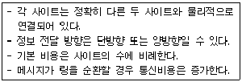
- ring connection
- hierachy connection
- star connection
- partially connection
(정답률: 85%)
73. 어셈블러를 두 개의 Pass로 구성하는 이유로서 가장 적절한 것은?
- pass 1, 2의 어셈블러 프로그램이 작아서 경제적이기 때문에
- 한 개의 pass만을 사용하면 프로그램의 크기가 증가하여 유지보수가 어렵기 때문에
- 한 개의 pass만을 사용하면 메모리가 많이 소요되기 때문에
- 기호를 정의하기 전에 사용할 수 있어 프로그램 작성이 용이하기 때문에
(정답률: 71%)
74. 자원 보호 기법의 종류로 거리가 먼 것은?
- 자격 제어 행렬(Capability control matrix)
- 접근 제어 리스트(Access control list)
- 접근 제어 행렬(Access control matrix)
- 자격 리스트(Capability list)
(정답률: 45%)
75. 분산 운영체제의 개념 중 강결합(TIGHTLY-COUPLED)시스템의 설명으로 옳지 않은 것은?
- 프로세스간의 통신은 공유메모리를 이용한다.
- 여러 처리기들 간에 하나의 저장장치를 공유한다.
- 메모리에 대한 프로세스 간의 경쟁 최소화가 고려되어야 한다.
- 각 사이트는 자신만의 독립된 운영체제와 주기억장치를 갖는다.
(정답률: 72%)
76. 4개의 페이지를 수용할 수 있는 주기억장치가 있으며, 초기에는 모두 비어 있다고 가정한다. 다음의 순서로 페이지 참조가 발생할 때, LRU 페이지 교체 알고리즘을 사용할 경우 몇 번의 페이지 결함이 발생하는가?
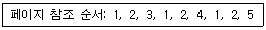
- 4회
- 5회
- 6회
- 7회
(정답률: 60%)
77. 직접 파일(direct file)에 대한 설명으로 거리가 먼 것은?
- 직접 접근 기억장치의 물리적 주소를 통해 직접 레코드에 접근한다.
- 키에 일정한 함수를 적용하여 상대 레코드 주소를 얻고, 그 주소를 레코드에 저장하는 파일 구조이다.
- 직접 접근 기억장치의 물리적 구조에 대한 지식이 필요하다.
- 직접 파일에 적합한 장치로는 자기테이프를 주로 사용한다.
(정답률: 53%)
78. 파일 손상을 막기 위한 파일 보호 기법이 아닌 것은?
- 파일 명명(File Naming)
- 접근 제어(Access control)
- 암호화(Password/Cryptography)
- 복구(Recovery)
(정답률: 72%)
79. 분산처리 시스템에 대한 설명으로 옳지 않은 것은?
- 사용자는 각 컴퓨터의 위치를 몰라도 자원을 사용할 수 있다.
- 업무량 증강 따른 시스템 확장이 용이하다.
- 중앙 집중형 시스템에 비해 소프트웨어 개발이 쉽다.
- 여러 사용자가 데이터를 공유할 수 있다.
(정답률: 79%)
80. 운영체제의 목적과 거리가 먼 것은?
- 신뢰도 향상
- 처리량 향상
- 응답 시간 단축
- 반환시간 증대
(정답률: 73%)
5과목: 마이크로 전자계산기
81. 마이크로프로세서에서 데이터가 저장된 또는 저장될 기억 장치의 장소를 지정하기 위해 사용하는 버스(bus)는?
- 레지스터 연결 버스
- 데이터 버스
- 주소 버스
- 제어 버스
(정답률: 69%)
82. 주변장치로부터 CPU에 인터럽트(interrupt) 요구가 발생한 경우의 필요한 절차에 해당하지 않은 것은?
- 주변장치로부터 긴급사태가 발생했음을 CPU에 알린다.
- CPU는 현재 진행 중인 명령을 실행 후 거듭하여 인터럽트(interrupt) 요구가 발생했는지 확인한다.
- CPU 내부 레지스터들의 내용을 stack 혹은 인터럽트(interrupt) 벡터에 저장시킨다.
- 인터럽트 서비스 루틴(interrupt service routine)으로 들어간다.
(정답률: 89%)
83. 명령어의 어드레스 부분의 내용을 메모리 주소로 하여 메모리 주소의 내용을 읽거나 그 메모리 주소에 어떤 내용을 저장하는 방식은?
- 인덱스 주소 지정방식(Index Addressing mode)
- 직접 주소 지정방식(Direct Addressing mode)
- 함축 주소 지정방식(Implied Addressing mode)
- 랜덤 주소 지정방식(Random Addressing mode)
(정답률: 80%)
84. 다음 용어 중 데이터가 전송되는 속도를 나타내는 것은?
- 보 레이트(baud rate)
- 듀티 팩터(duty factor)
- 클럭 레이트(clock rate)
- 스케일 팩터(scale factor)
(정답률: 85%)
85. 다음 중 중앙처리장치(CPU)에 가장 많이 의존하는 입?출력 방식은?
- 프로그램에 의한 입?출력
- 인터럽트에 의한 입?출력
- 데이터 채널에 의한 입?출력
- 입?출력 전용장치에 의한 입?출력
(정답률: 72%)
86. 격리형 I/O(isolated I/O) 방식에 대한 설명으로 옳지 않은 것은?
- 별개의 I/O 명령을 사용한다.
- 입?출력 포트가 기억장치 주소공간의 일부이다.
- 메모리 공간이 넓다.
- 입?출력 장치들의 주소 공간이 주기억 장치 주소 공간과는 별도로 할당된다.
(정답률: 57%)
87. 다음 회로의 논리식 f는?
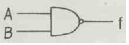
- f = A' + B'
- f = A · B
- f = A + B
- f = A' · B'
(정답률: 48%)
88. DMA 제어장치가 꼭 갖추어야 할 필수 레지스터가 아닌 것은?
- status register
- program counter
- data counter
- address register
(정답률: 47%)
89. Two pass 어셈블러는 First pass 와 Second pass로 나누어진다. 이 중 First pass의 기능은 ?
- 2진수로의 번역
- 의사 명령(pseudo instruction) 테이블 작성
- 사용자가 정의한 번지 기호와 이에 해당하는 실제 번지와의 관계를 나타내는 표를 작성
- 번역 과정 중 에러 체크 및 에러 표시
(정답률: 65%)
90. 로더(Loader)에 관한 설명 중 적재모듈을 주기억장치에 적재하고 상대 주소를 절대 주소로 변환하는 것은?
- 절대 로더
- 부트 로더
- 바인더
- 재배치 로더
(정답률: 60%)
91. 가상 메모리에서 페이지 폴트(page fault)가 발생될 때 해결하는 방법과 가장 관련이 있는 것은?
- LRU
- cache
- sort
- relocation
(정답률: 65%)
92. 병렬 입?출력 인터페이스(interface)의 특징으로 옳은 것은?
- 고속의 데이터 전송
- 원거리 통신에 사용
- 전송을 위한 회선이 적게 사용된다.
- 입력된 직렬 데이터를 병렬 데이터로 변환시켜 주는 기능을 갖고 있다.
(정답률: 63%)
93. 시프트 레지스터(shift register)의 내용을 왼쪽으로 두 번 시프트 하면 결과는? (단, 부호비트의 변경이 없으며, 새로 들어오는 비트인 LSB는 0 이다.)
- 원래 데이터의 2배
- 원래 데이터의 4배
- 원래 데이터의 1/2배
- 원래 데이터의 1/4배
(정답률: 70%)
94. Cache 메모리와 주기억장치 사이에 정보 교환을 위하여 주기억 장치에 접근하는 단위는 무엇인가?
- 워드
- 블록
- 바이트
- 비트
(정답률: 55%)
95. 프로그래머에게 실제의 주기억장치보다 훨씬 큰 주기억 용량을 가진 것처럼 느끼게 하는 기억장치 운용방식은?
- cache memory
- virtual memory
- auxiliary memory
- associative memory
(정답률: 73%)
96. 마스크 롬(Mask ROM)에 대한 설명 중 옳은 것은?
- 대량 생산 공정에 주로 사용된다.
- 자외선을 쏘여 그 내용을 지울 수 있다.
- 기억된 내용을 임의로 변경시킬 수 있다.
- 사용자의 편의에 따라 재프로그램 할 수 있다.
(정답률: 70%)
97. 소스 프로그램의 컴파일이 불가능한 소규모 마이크로컴퓨터에서 이를 컴파일하기 위해 보다 대용량의 컴퓨터를 이용, 컴파일 작업을 수행하고자 한다. 이 때 사용되는 컴파일러를 무엇이라 하는가?
- Macro Compiler
- Absolute Compiler
- Cross Compiler
- Relocation Compiler
(정답률: 70%)
98. 다음 설명 중 옳지 않은 것은?
- 프로그램 작성시 자주 사용되는 부분은 루틴이란 단위로 한번 작성해 놓고 필요시 호출해서 사용한다.
- 처리 프로그램은 컴퓨터 사용자에게 여러 가지 편의를 제공하기 위해서 컴퓨터 제작회사에 제공되는 프로그램으로 언어처리기와 서비스 프로그램으로 나눌 수 있다.
- 유틸리티 프로그램은 특정한 일을 수행하는데 통상적으로 이용할 수 있는 프로그램들의 모임이다.
- 언어처리기에 의해서 번역된 프로그램을 로드 프로그램이라 하며 하나의 실행 가능한 프로그램을 만들어 주게 된다.
(정답률: 62%)
99. RISC(Reduced Instruction Computer)에 대한 설명으로 옳지 않은 것은?
- 하드웨어에서 스택을 지원한다.
- 메모리 접근 회수를 줄이기 위해 많은 수의 레지스터를 사용한다.
- 빠른 명령어 해석을 위해 고정 명령어 길이를 사용한다.
- 비교적 전력 소모가 적기 때문에 임베디드 프로세서에도 채택되고 있다.
(정답률: 56%)
100. 인터럽트를 발생시키는 원인 중 클럭 펄스나 특정 사이클 수를 세어 인터럽트를 발생시키는 것을 무엇이라 하는가?
- 입?출력 인터럽트
- 카운터 인터럽트
- 전원이상 인터럽트
- 장치 오작동 인터럽트
(정답률: 82%)